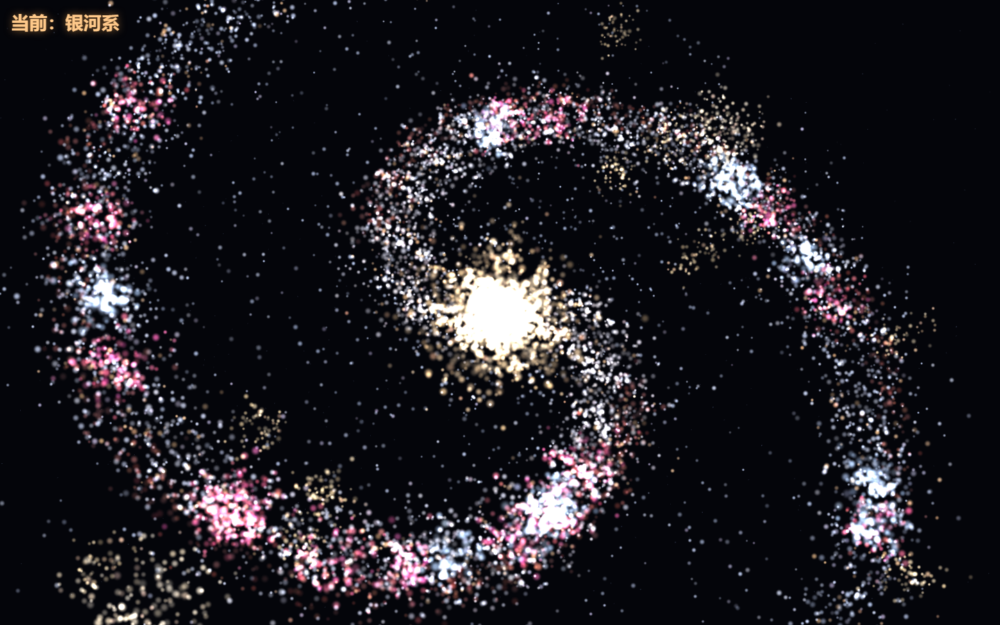
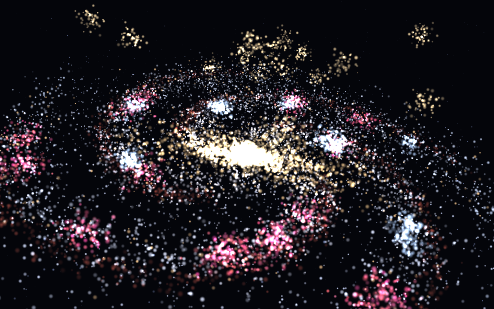
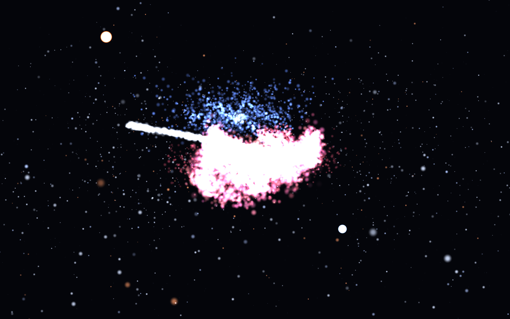

以下为引擎实际运行的无后期截图（SwiftShader 软件渲染，1440×900）。三态共用同一套 14000 粒子系统，流转时位置、颜色、尺寸三重渐变，约 2.8 秒完成形态切换。



| 形态 | 还原的真实天体结构 | 着色特征 |
|---|---|---|
| 仙女座 M31 | 双旋臂（对数螺线）、核球色梯度（暖核冷缘）、HII 造星区、OB 星协、臂内缘尘埃带、盘面翘曲、球状星团、伴星系 M32/M110 | 核球金暖 → 盘缘冷蓝，HII 粉红斑块沿臂分布 |
| 银河系 SBbc | 四旋臂、盒状棒核（倾斜 25°）、核盘、HII 造星区、OB 星协、尘埃带、球状星团晕、晴星场 | 棒核金色花生形，四臂蓝白交织粉红 HII |
| 猎户座 M42 | 主电离弧「吹散气泡」（心形亮边）、22 条放射纤维丝、四边形星团 Trapezium、内腔雾、M43 子泡、蓝反射区 NGC1977、暗尘带剪影、腰带三星、参宿四（红超巨星）/参宿七（蓝超巨星）、外围星场 | 气泡亮边粉白、尾端暗红，北侧膜瓣纯蓝反射 |
| 环节 | 实现 |
|---|---|
| 粒子规模 | 桌面 14000 / 移动端 9000 自适应，另有 420 背景尘埃常驻漂移 |
| 形变物理 | 弹簧力（k=9~16）+ 指数阻尼拖向目标形；叠加切向涡旋（swirl）与 Perlin 式噪声 |
| 三重渐变 | 流转 2.8s 内位置、颜色、粒子尺寸同步向目标形态插值 |
| 闪烁 | 每粒子独立相位，顶点着色器驱动 0.72 + 0.28·sin(t·2.1 + φ) 亮度脉动 |
| 交互 | 点击轮换三态、拖动环视、滚轮缩放、鼠标掠过局部斥力推开粒子 |
| 渲染 | THREE.js r128 本地离线，加色混合 + 软圆点 sprite，无深度写入 |
无需任何依赖，双击 index.html 即可。快速体验打开 index.html#guest；直达页面 #guest/forum、#guest/gallery。低端集显如遇卡顿，把 js/morph.js 顶部 N 从 14000 降到 8000。